Galería Multimedia
Videos
Video 1 de 7
Fotografías
Workflow del Proyecto
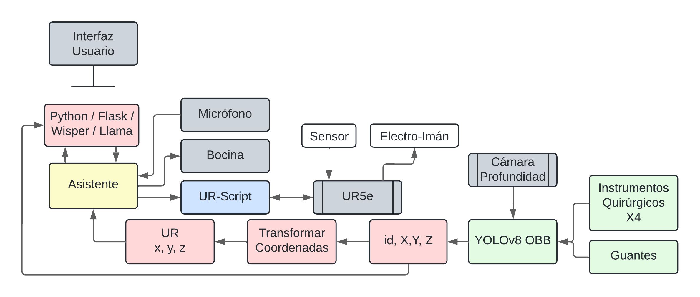
Diagrama que ilustra el flujo de trabajo y la arquitectura completa del proyecto S.I.L.V.I.A.
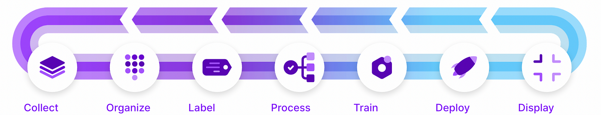
Diagrama que muestra como se contruye IA basada en visión por computadora. (Roboflow)
Inteligencia Artificial Aplicada
Whisper
Detección offline de voz para interacción con el asistente quirúrgico.
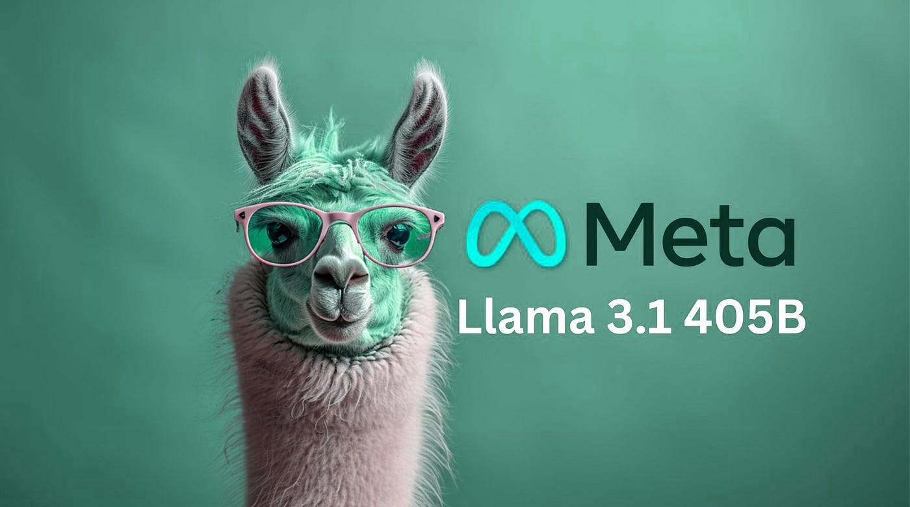
Llama3.1 con Ollama
LLM offline que actúa como asistente quirúrgico, procesando peticiones y coordinando acciones.
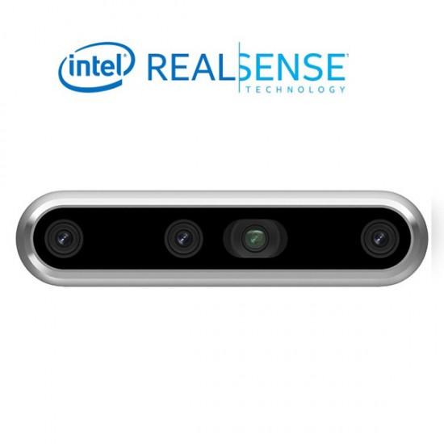
Sistema de Transformación de Coordenadas
Procesamiento dinámico para cámara de profundidad Intel, facilitando la ubicación espacial.
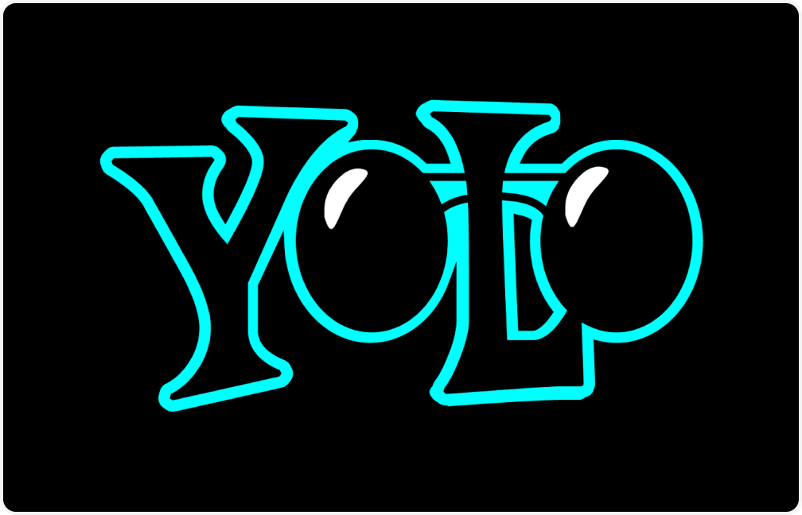
YOLOv8 OBB
Detección de instrumental quirúrgico en tiempo real para identificación y seguimiento.
Tecnologías Utilizadas
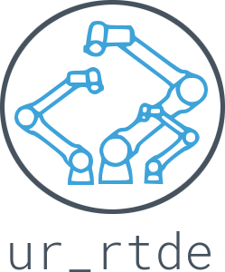
UR-RTDE
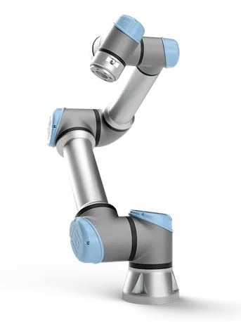
UR-Script
Intel D455

Python

Flask
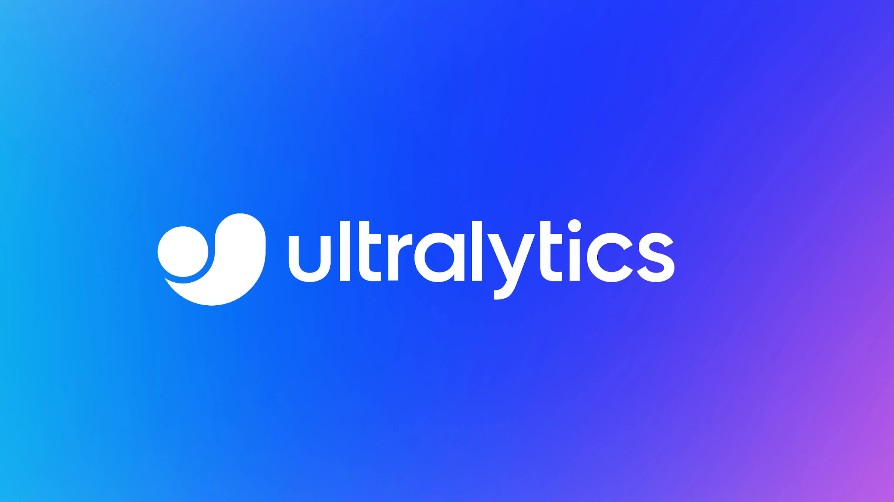
Ultralytics
YOLOv8

Google TTS

Ollama
Llama3.1
Whisper
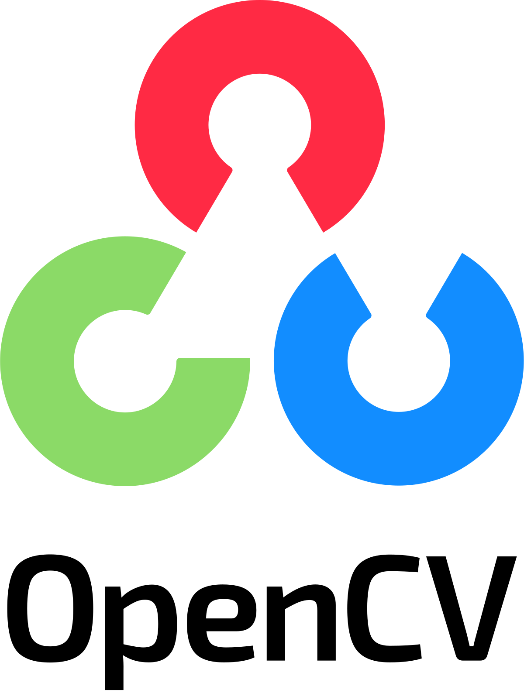
OpenCV

Roboflow
Cuda
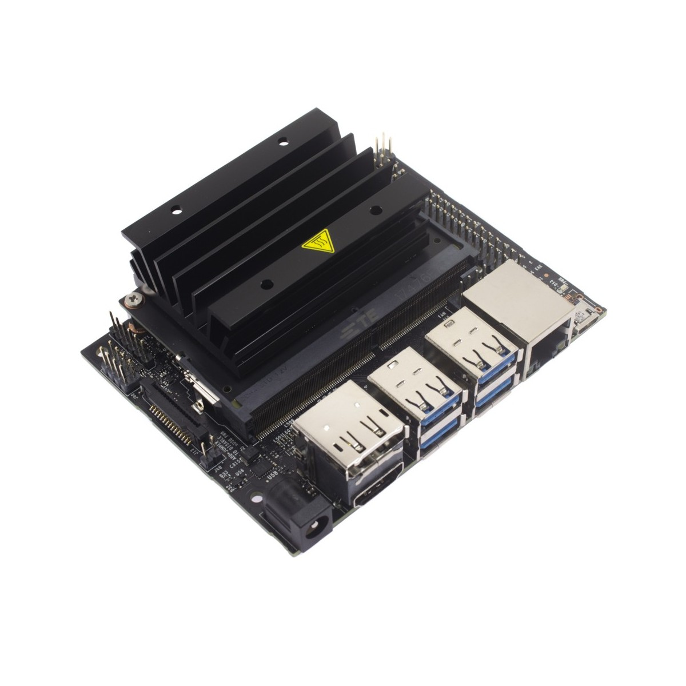
Jetson Nano
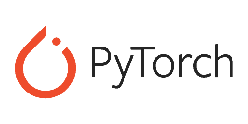
Pytorch
PyQt5
Ubuntu
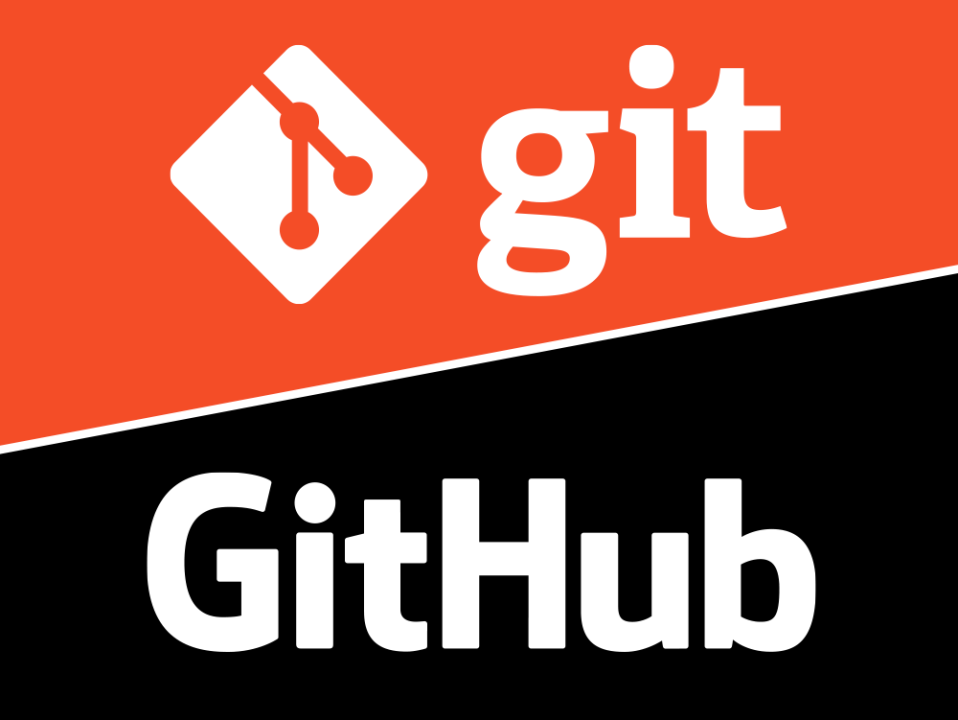
Git & Github

Matplolib
Pandas
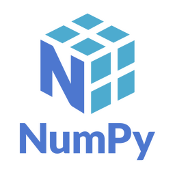
Numpy
MediaPipe
MySQL